La barra lateral: cinco mejoras para elegir
He mirado la barra del ordenador y el cajón del móvil como los usaría alguien: en cuatro momentos (el primer día, la semana a medias por libre, el día de jornada servido y PACE cerrado como en v1), en castellano y en inglés, en crema y en oscuro, a 1280 × 720, 1366 × 768, 1536 × 864 y 1920 × 1080, con el navegador ampliado (150 % y 175 %) y en el cajón a 360 × 640. Son 112 fotos. No he montado nada que se vea: las opciones van pintadas encima de la app de verdad.
Para contestar, una letra por pregunta. Mi recomendación, en verde:
1A 2A 3B 4B 5A
1 · Con la ventana baja o el navegador ampliado, la letra se vuelve diminuta
En el ordenador la barra encoge entera para caber, sin límite. A 1280 × 720 baja al 93 % y no se nota. Con el navegador al 150 % (1274 × 579) baja al 74 %, y al 175 % (1092 × 496), al 62 %: la letra pequeña queda en 6,8 px y las iniciales de los días, en 5,6. En el cajón del móvil ya elegiste un suelo del 80 % y, por debajo, «un pequeño scroll sin barra».
AEl mismo suelo que el cajón: nunca menos del 80 %, y lo que no cabe se desplaza
La barra se ve igual que siempre, solo que a partir del 80 % deja de encoger. Lo de abajo (el último logro y el pie) se alcanza con la rueda, sin barra de desplazamiento. Lo que más se usa (la semana, Hoy, la pausa y las bibliotecas) queda a la vista.
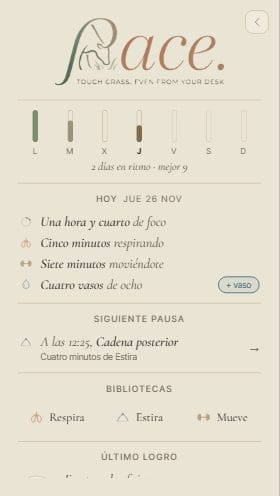
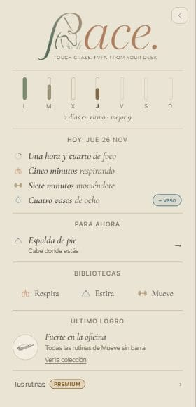
BComo la A, pero en ventanas bajas antes se recoge el adorno
Por debajo de 640 px de alto, el logo baja a la mitad y el último logro queda en una línea. Hace falta desplazarse menos, pero la barra deja de verse igual en todas las pantallas, y eso era lo que querías conservar.
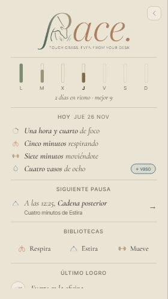
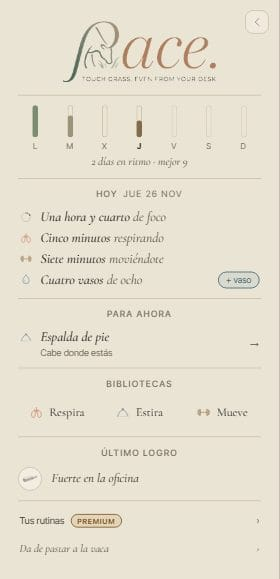
CComo está: todo encoge lo que haga falta
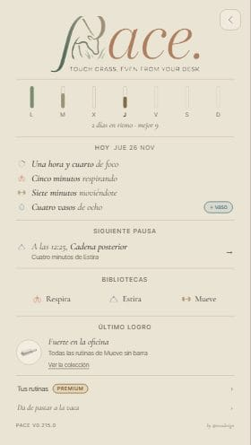
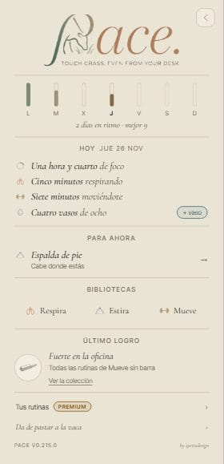
Recomiendo la A. Es la regla que ya elegiste para el móvil, cambia solo en las ventanas que hoy se leen mal (de 1280 × 720 para arriba no se mueve nada) y no cambia la composición. Con la B se gana poco: al 175 % se ve un bloque más.
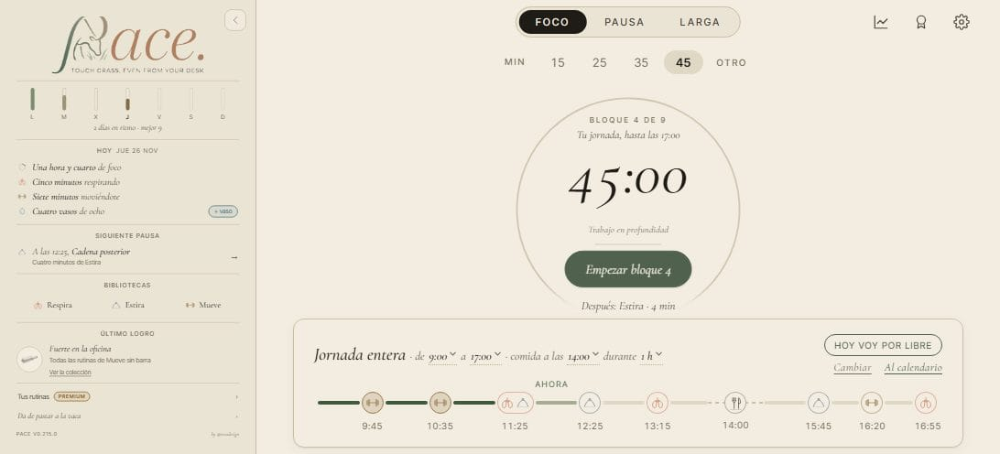
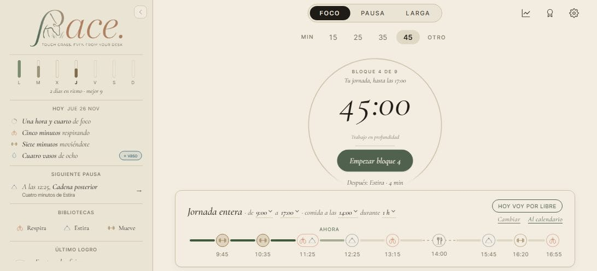
2 · Un vaso de más no se puede quitar desde la barra
«+ vaso» es lo que más se toca de la barra, y la fila entera es el botón, así que un toque sin querer es fácil. Para quitarlo hay que encontrar Hidrátate; con el día de jornada servido, la home no lo enseña. Junto a «+ vaso» no cabe nada más: con «Deshacer» al lado, «Cuatro vasos de ocho» se partía en dos líneas (lo medí).
AUnos segundos después de sumar, la frase dice «Un vaso más. Deshacer»
En el mismo sitio de la frase, sin empujar nada. Pasados unos cinco segundos vuelve a «Cinco vasos de ocho». «Deshacer» es su propio botón; el resto de la fila sigue sumando.
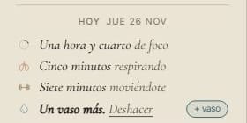
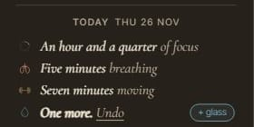
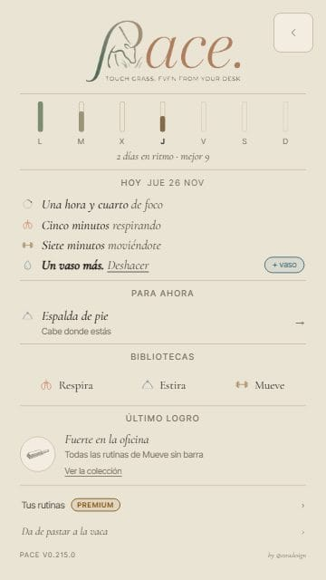
BUn «−» siempre a la vista, con algún vaso
Cabe con «Cuatro vasos de ocho», pero con la frase más larga («Los ocho vasos del día») se parte en dos líneas.
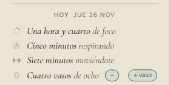
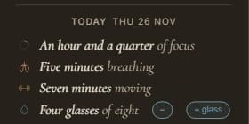
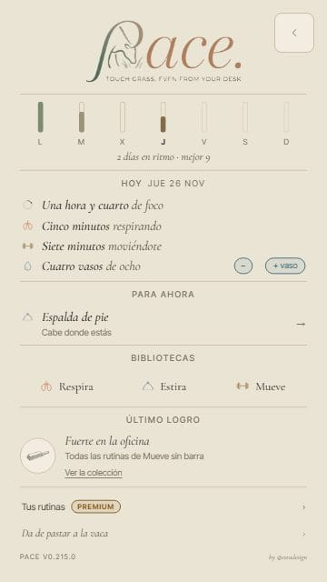
CComo está: se quita en Hidrátate
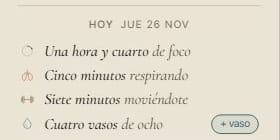
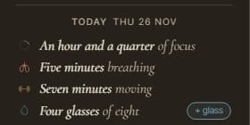

Recomiendo la A. Lo que hace falta es arreglar el toque sin querer, que se nota justo después. La A además confirma el vaso sin sonido y sin aviso encima, y no añade un botón que se queda para siempre. La B está siempre ahí y se parte con la frase más larga.
3 · El último logro ocupa mucho para lo poco que cambia
Es el bloque más alto después de Hoy y enseña lo mismo durante días. El primer día dice «Aún no hay ninguno» junto a un sello vacío. La colección ya tiene su sello arriba a la derecha de la home (y la tecla L).
AComo está
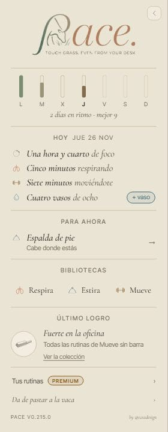
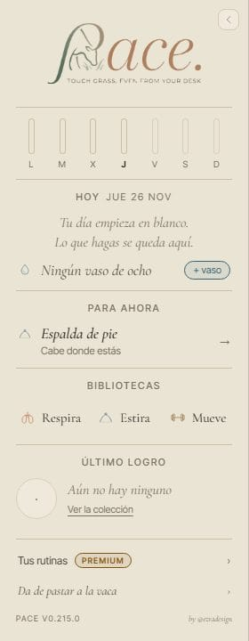
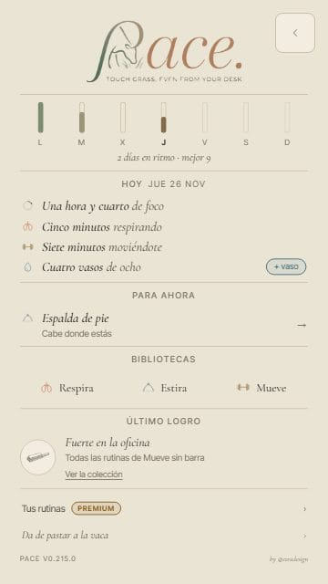
BEn una línea: el sello pequeño, el nombre y ›; sin ninguno, el bloque no sale
Toda la fila sigue abriendo la colección. El rótulo «Último logro» se queda.
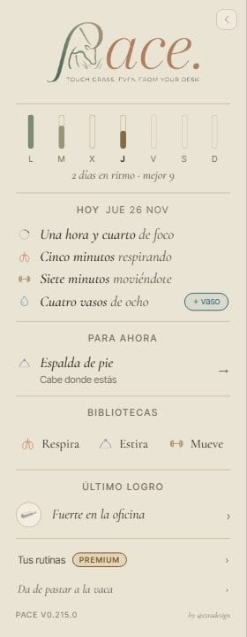
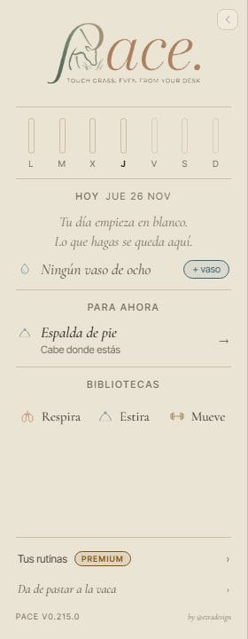
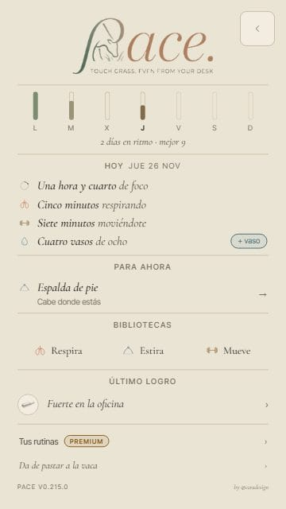
CFuera de la barra
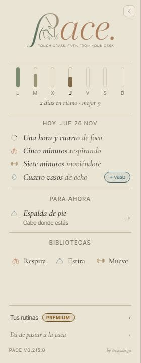
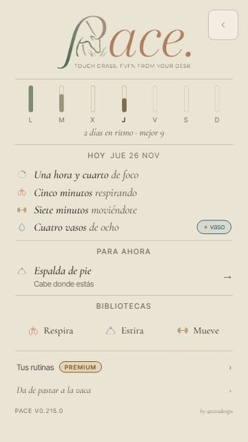
Recomiendo la B. El logro sigue a la vista sin pedir tanto sitio, el primer día no hay una fila vacía y el sitio que queda libre ayuda en las ventanas bajas (pregunta 1). La C quita algo que alegra cuando llega uno nuevo.
4 · «2 días en ritmo» no se entiende solo
Es la racha, pero «en ritmo» suena a «A tu ritmo», como si fueran días con el plan cumplido. Cuenta los días seguidos con algo hecho. Los tres textos caben de sobra (ocupan menos de la mitad del ancho), así que no hace falta medirlos en Linux.
AComo está: «2 días en ritmo · mejor 9»
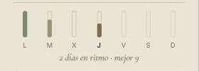
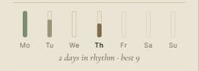
B«2 días seguidos · tu mejor, 9»
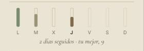
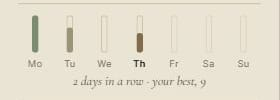
C«Racha de 2 días · mejor, 9»
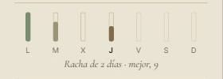
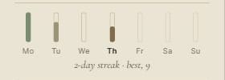
Recomiendo la B. Dice lo que cuenta con las palabras de todos los días. «Racha» empuja más hacia el juego, y la app no busca eso.
5 · Plegar la barra con el teclado
El botón de plegar decía «Colapsar (⌘\)», pero ese atajo nunca existió (y en Windows no hay ⌘). Ya he quitado la promesa del título. Esta pregunta no cambia nada de lo que se ve.
ACtrl + \ (⌘ + \ en el Mac) pliega y despliega la barra, y el título lo dice con la tecla de cada sistema
Como en los editores que la usan para lo mismo. En el móvil no hace nada. Como las teclas T, S y L, no salta mientras escribes ni con una sesión delante.
BSin atajo, como queda ahora
Recomiendo la A. Cuesta poco, la usan quienes trabajan con teclado y sirve para quien no usa ratón.
Ya arreglado en la rama (no cambia lo que se ve)
- El lector de pantalla no oía la racha. El bloque de la semana es un botón que se llamaba solo «Ver la semana en Estadísticas»; ahora se llama «2 días en ritmo · mejor 9. Ver la semana en Estadísticas».
- El título de plegar prometía «⌘\», una tecla que no hacía nada. Ahora dice «Colapsar».
Los dos van con su prueba (tests/sidebar-nombres.spec.js), que falla en main y pasa en la rama, junto con las 46 pruebas de la barra y el cajón.
Lo que miré y dejaría como está
| Qué | Lo que vi |
|---|---|
| El orden | La semana arriba y lo que se toca (el agua, la pausa, las bibliotecas) a media altura. En el cajón queda a mano del pulgar, y en el ordenador todo cabe sin desplazarse, así que reordenar no acerca nada. |
| «Siguiente pausa» | Con el día servido repite la parada de la línea, pero la línea se ve solo en la home, y la barra la acompaña en Estadísticas o en una biblioteca. Sin día, «Para ahora» solo propone lo que puedes abrir, también con PACE cerrado. |
| Las bibliotecas | Por libre repiten tres botones de la home; con el día servido son la única puerta a Respira, Estira y Mueve. |
| Hoy | Se entiende sin explicación en los dos idiomas; lo que vale cero no sale. |
| Oscuro e inglés | Nada se corta ni se sale en las 112 fotos; en oscuro, todo con su contraste. |
| El cajón | A 360 × 640 cabe entero (al 85-97 %), se cierra con Escape y con su flecha. |
| Ventanas grandes | A 1536 y 1920 sobra aire (95-193 px) antes del pie, como elegiste: el pie abajo y el aire, encima. |
Cómo se rehace: docs/proposals/sidebar-23nov/banco/ (fotos.spec.js, maquetas.sh y recortes.js). Las maquetas, en maquetas/.